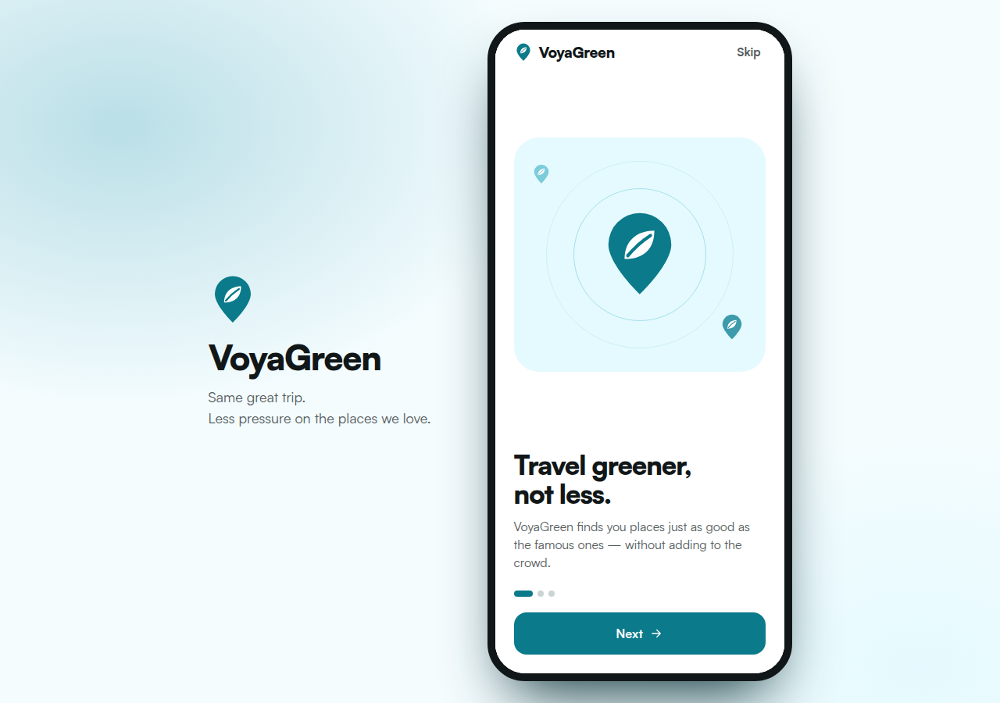

VoyaGreen
VoyaGreen finds travelers a lower-pressure place with the same vibe, then plans the trip
The problem
Kyla, a college student in Quezon City planning her barkada's summer trip, who books Boracay because it is the first thing every TikTok and travel site shows her
Every traveler gets sent to the same few famous spots, so those places get overcrowded and strained, and nobody sees the pressure their choice adds.
- Recommendations rank by popularity, price and distance, never by the pressure on the place
- Sustainability data exists but is scattered, and nobody checks it before choosing a trip
- Lesser-known places with the same vibe stay invisible
What we built

- Open VoyaGreen: quick onboarding, then pick beach, food and snorkeling for a 3-day trip
- Tap Boracay: its tourism-pressure score is High (87), with the indicators behind it and a greener pick with the same vibe, Carabao Island
- Tap Carabao Island: a 3-day itinerary built on those interests, 58 points lower pressure, saved to My trips
[ input ] ──▶ [ The pressure check and swap:… ] ──▶ [ result ]Pick a place, your days and your interests. VoyaGreen scores its tourism pressure, shows the indicators behind it, and if it's High, swaps in a same-vibe place and builds your itinerary there.
- Frontend — React Native with Expo
- The hard part — making the swap feel like the same trip: same vibe, and every day built from your own interests
VoyaGreen
VoyaGreen won't tell you to stay home. It shows you somewhere just as good that the crowd hasn't found. Travel greener, not less.